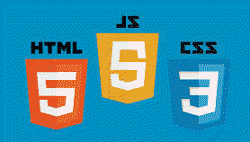

2016/02/29: On Building A Personal Website
Today's assignment is to write a brief blog post on the experiences of building a personal website.
One of our first assignments was to create a wireframe. I know that the wireframe helped me tremendously to focus on what I wanted from an ideal standpoint. I had no idea if I was going to be able to pull it off, but I liked that I could brain-storm on what I wished the site might look like without actually worrying about how to pull it off--you just laid it all out on virtual paper with wireframe software. You can see the wireframes I used for this site in my Projects link. I think I came pretty close to my original concept.
The second concern of mine was the fact that I'm color-blind. Not gray-scale color-blind, mind you--I do in fact see colors, but some appear washed out and are hard to distinguish, such as reds, browns, greens or yellows, greens, or grays and aqua-marines. I know this kept me from ever considering web design in the past, and therefore focused on back-end development. I was happy to see that one solution was to use websites that took pictures and figured out color palletes from them. I used one for this very site and was extremely happy with the results, even getting some good feedback about the color scheme. Huzzah for technology helping us overcome our disabilities!!!
The next hurdle I encountered was CSS. I do find CSS rather confusing, but I've been quite happy with SOME of the results of the CSS formatting on this website, but I do know I have lots more to learn.
Then there's the challenge of desktop/laptop versus mobile/tablet-focused web design. The website currently doesn't scale well horizontally on a PC which has plenty of wide real-estate. I need to add some additional work to make it expand to the full availability of the screen. I liked the way the page looked on mobile, but then not on a tablet which has lots of verticle space. Then there was the issue I saw in my "Cheat Sheet" project which was that the scrolling on a mobile device was a PAIN in that particular page because a mobile/tablet device doesn't get the same scroll bars (or use of a mouse wheel), like on a desktop. Long story short--I need to work on mobile vs desktop design and will be one of my focuses in the coming weeks while at Dev Bootcamp.
Well, until next time. -- JLH
